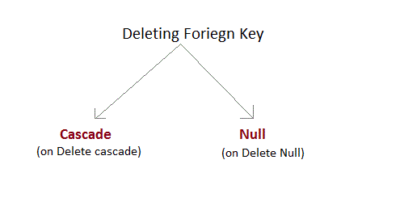

SQl Constraints are rules used to limit the type of data that can go into a table, to maintain the accuracy and integrity of the data inside table.
Constraints can be divided into following two types,
Constraints are used to make sure that the integrity of data is maintained in the database. Following are the most used constraints that can be applied to a table.
NOT NULL constraint restricts a column from having a NULL value. Once NOT NULL constraint is applied to a column, you cannot pass a null value to that column. It enforces a column to contain a proper value. One important point to note about NOT NULL constraint is that it cannot be defined at table level.
CREATE table Student(s_id int NOT NULL, Name varchar(60), Age int);
The above query will declare that the s_id field of Student table will not take NULL value.
UNIQUE constraint ensures that a field or column will only have unique values. A UNIQUE constraint field will not have duplicate data. UNIQUE constraint can be applied at column level or table level.
CREATE table Student(s_id int NOT NULL UNIQUE, Name varchar(60), Age int);
The above query will declare that the s_id field of Student table will only have unique values and wont take NULL value.
ALTER table Student add UNIQUE(s_id);
The above query specifies that s_id field of Student table will only have unique value.
Primary key constraint uniquely identifies each record in a database. A Primary Key must contain unique value and it must not contain null value. Usually Primary Key is used to index the data inside the table.
CREATE table Student (s_id int PRIMARY KEY, Name varchar(60) NOT NULL, Age int);
The above command will creates a PRIMARY KEY on the s_id.
ALTER table Student add PRIMARY KEY (s_id);
The above command will creates a PRIMARY KEY on the s_id.
FOREIGN KEY is used to relate two tables. FOREIGN KEY constraint is also used to restrict actions that would destroy links between tables. To understand FOREIGN KEY, let's see it using two table.
Customer_Detail Table :
| c_id | Customer_Name | address |
|---|---|---|
| 101 | Adam | Noida |
| 102 | Alex | Delhi |
| 103 | Stuart | Rohtak |
Order_Detail Table :
| Order_id | Order_Name | c_id |
|---|---|---|
| 10 | Order1 | 101 |
| 11 | Order2 | 103 |
| 12 | Order3 | 102 |
In Customer_Detail table, c_id is the primary key which is set as foreign key in Order_Detail table. The value that is entered in c_id which is set as foreign key in Order_Detail table must be present in Customer_Detail table where it is set as primary key. This prevents invalid data to be inserted into c_id column of Order_Detail table.
CREATE table Order_Detail(order_id int PRIMARY KEY, order_name varchar(60) NOT NULL, c_id int FOREIGN KEY REFERENCES Customer_Detail(c_id));
In this query, c_id in table Order_Detail is made as foriegn key, which is a reference of c_id column of Customer_Detail.
ALTER table Order_Detail add FOREIGN KEY (c_id) REFERENCES Customer_Detail(c_id);
There are two ways to maintin the integrity of data in Child table, when a particular record is deleted in main table. When two tables are connected with Foriegn key, and certain data in the main table is deleted, for which record exit in child table too, then we must have some mechanism to save the integrity of data in child table.

ERROR : Record in child table exist
CHECK constraint is used to restrict the value of a column between a range. It performs check on the values, before storing them into the database. Its like condition checking before saving data into a column.
create table Student(s_id int NOT NULL CHECK(s_id > 0), Name varchar(60) NOT NULL, Age int);
The above query will restrict the s_id value to be greater than zero.
ALTER table Student add CHECK(s_id > 0);